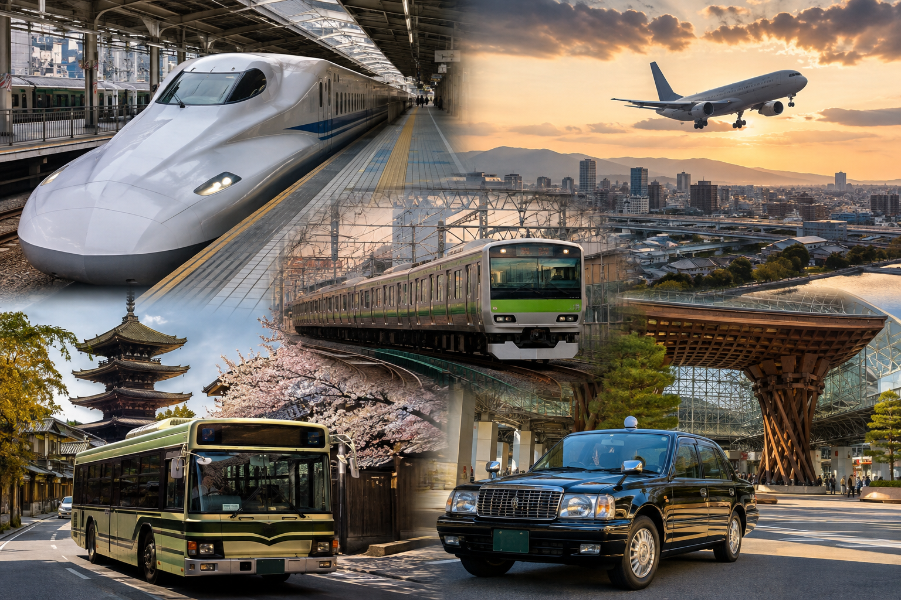
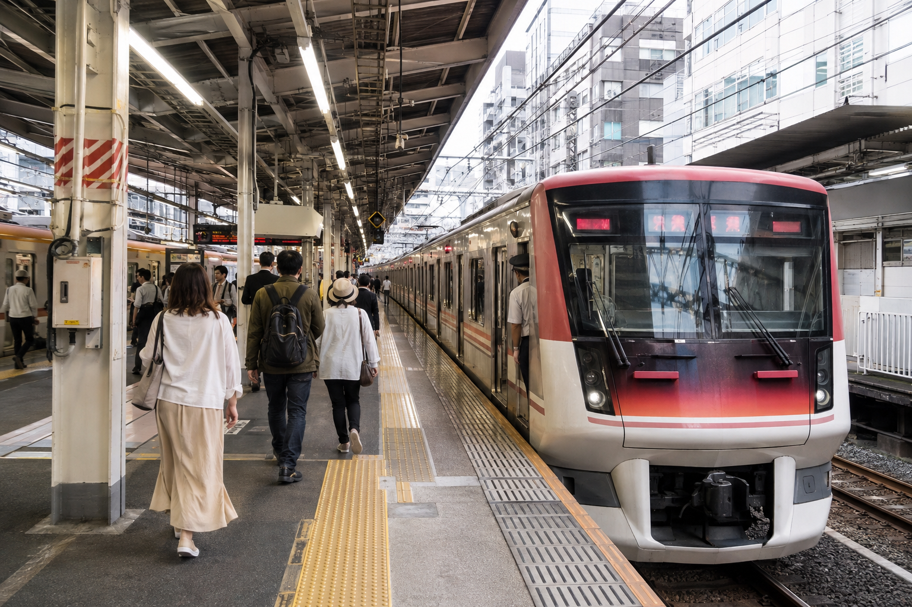
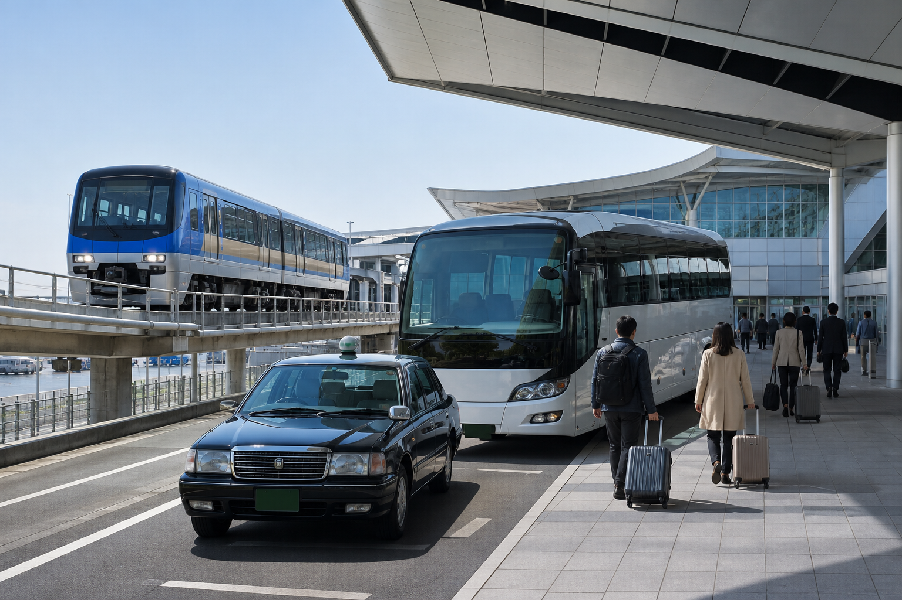

How to Get Around Japan: Transportation Guide
Getting around Japan can look complicated before your first trip. There are JR trains, private railways, subways, buses, Shinkansen, IC cards, taxis, domestic flights, ferries, and several types of rail passes. The good news is that you do not need to learn every part of the system before you arrive.
For most first-time visitors, the basic strategy is simple: use trains and subways inside major cities, the Shinkansen for many long-distance city-to-city journeys, and buses or taxis when rail does not take you close enough to your destination. Rental cars, domestic flights, highway buses, and ferries become more useful on specific routes rather than for every trip. This matches Japan's official tourism guidance, which says public transport is the main way most visitors travel around the country.
The best transport choice depends on where you are going, how much luggage you have, your budget, and how much time you want to spend in transit. This guide explains the full system at a beginner level so you can decide what to use without turning transport planning into the hardest part of your Japan trip.
Japan Transportation at a Glance

| Transport | Best For | First-Time Visitor Use |
|---|---|---|
| Local trains | Cities and nearby destinations | Very high |
| Subways/metro | Tokyo, Osaka and other large cities | Very high |
| Shinkansen | Fast travel between major cities | Very high |
| Local buses | Areas not well served by trains | High in some cities |
| Highway buses | Lower-cost long-distance travel | Useful for budget trips |
| Taxis | Short difficult routes, late travel, luggage | Useful when needed |
| Domestic flights | Very long distances | Useful for distant regions |
| Rental cars | Rural areas and road trips | Route-dependent |
| Ferries | Islands and selected coastal routes | Route-dependent |
| Bicycles | Local exploration | Optional |
You will probably use several of these during one trip.
There is no reason to choose one transport type for the entire country.
The Simplest Transportation Strategy for a First Japan Trip
If your first route looks something like:
Tokyo → Kyoto → Osaka
your transport can be surprisingly simple.
You might use:
Airport → Tokyo: train or airport bus
Around Tokyo: trains and subways
Tokyo → Kyoto: Shinkansen
Around Kyoto: trains, subway, buses and walking
Kyoto → Osaka: train
Around Osaka: trains and subway
Osaka → Kansai Airport: train or airport bus
That covers most of the transport needs for a classic first trip.
You do not need a rental car.
You do not need a domestic flight.
And you should not assume you need a nationwide rail pass.
Trains Are the Main Transport for Most Visitors

Rail is the backbone of travel in many parts of Japan.
In large cities, you may see several companies operating different lines. Tokyo, for example, includes JR lines, Tokyo Metro, Toei Subway, and other private railways. Osaka also uses a mix of JR and private operators.
This can make the map look harder than it really is.
You normally do not need to memorize which company owns every line.
Instead, focus on:
- ✓Your starting station
- ✓Your destination station
- ✓The recommended route
- ✓Platform number
- ✓Train direction
- ✓Any required transfer
A navigation app can handle much of the route planning.
JR Trains vs Private Railways
One of the first things travelers notice is that not every train in Japan belongs to Japan Railways.
JR
Japan Railways operates a large national rail network, including many local lines and major intercity services.
Private Railways
Private companies operate many useful routes, especially around major cities and tourist regions.
You may use both during the same day.
This matters because a JR ticket or certain rail passes do not automatically cover every private railway.
Do not choose a slower route simply because it uses JR if another train gets you where you need to go more easily.
The best route is usually the one that fits your actual journey.
Local Trains
Local trains are useful for:
- ✓Moving around cities
- ✓Short regional journeys
- ✓Reaching suburban areas
- ✓Connecting with major train stations
- ✓Day trips
In major cities, service can be frequent. Rural routes may run much less often, so check schedules more carefully when leaving the main tourist areas. JNTO notes that city trains can arrive every few minutes, while rural travel requires more planning because services are less frequent.
Subways and Metro Systems
Subways are especially useful in cities such as Tokyo and Osaka.
They can connect places that are less convenient on JR lines and are often part of the fastest route between two attractions.
Do not think of JR and the subway as competing systems.
Use whichever gets you where you need to go.
A normal Tokyo day may include:
JR train → subway → walking → another subway
without any problem.
How Do You Pay for Local Transport?
For many city trains, subways, and buses, a rechargeable IC card is one of the easiest options.
Cards such as Suica, PASMO, and ICOCA can be used across many major transport networks, and the major IC cards are widely interoperable across large cities. They are useful for everyday local transport, but they do not replace every long-distance ticket.
The dedicated IC Cards in Japan: Suica, PASMO and ICOCA Explained guide will cover:
- ✓Which card to get
- ✓Where it works
- ✓Physical vs mobile cards
- ✓How to recharge
- ✓What it cannot pay for
For this broad guide, the main point is simple:
An IC card is useful for everyday local travel, but it is not an all-inclusive Japan transport pass.
What Is the Shinkansen?
The Shinkansen is Japan's high-speed rail network.
For first-time visitors, it is often the most practical way to move between major cities such as Tokyo, Kyoto, Osaka, and Hiroshima.
You normally buy a ticket for the specific long-distance journey rather than simply tapping an IC card like you would for an ordinary subway ride.
The separate Shinkansen Guide: How to Use Japan's Bullet Trains will explain reservations, seat types, luggage rules, platforms, and boarding.
For transport planning, think of the Shinkansen as your fast intercity option, not your everyday city train.
Do You Need a Japan Rail Pass?
Not automatically.
The nationwide Japan Rail Pass is still sold in 7-, 14-, and 21-day versions, but whether it saves money depends on your exact long-distance journeys. Current official pricing also differs by purchase channel and is scheduled to change for some overseas agency purchases from October 1, 2026.
That means the correct planning order is:
- ✓Build your route.
- ✓List the expensive rail journeys.
- ✓Price the individual tickets.
- ✓Compare them with current pass options.
- ✓Buy a pass only if it makes sense.
Do not build your itinerary around a pass simply because you already bought one.
The full calculation belongs in Japan Rail Pass: Is the JR Pass Worth It ↗?
Local Buses
Buses become more important in places where trains do not reach every major sight.
You may use them for:
- ✓Parts of Kyoto
- ✓Rural areas
- ✓Mountain destinations
- ✓Smaller towns
- ✓Routes from train stations to attractions
Boarding and payment methods can vary by route.
Some buses use IC cards, while others may require a ticket or cash.
In cities where rail is available, I usually choose the train or subway first unless the bus clearly gives a better route.
Why Kyoto Transportation Feels Different
Tokyo is heavily rail-based.
Kyoto requires a more mixed approach.
A normal Kyoto day may include:
- ✓Train
- ✓Subway
- ✓Bus
- ✓Walking
This is one reason travelers should group Kyoto attractions by area instead of moving back and forth across the city.
You do not need one transport mode for the whole day.
Choose whichever makes each section of the route easier.
Walking Is Part of Japan Transportation
Do not underestimate how much you will walk.
Even if you use trains all day, you still walk:
- ✓Through large stations
- ✓Between platforms
- ✓From stations to hotels
- ✓Around temple areas
- ✓Through shopping districts
- ✓Between attractions
A route that looks short on the train map can still include a lot of walking.
Comfortable shoes matter as much as knowing which train to take.
Do You Need to Understand the Whole Rail System?
No.
This is one of the biggest things I would tell a first-time visitor.
You do not need to memorize:
- ✓Every train company
- ✓Every ticket type
- ✓Every rail pass
- ✓Every Shinkansen service
- ✓Every station layout
Learn what your own itinerary requires.
If your trip only covers Tokyo, Kyoto, and Osaka, focus on the transport connecting those places.
If you later add Kanazawa, Takayama, Hiroshima, or a rural area, then learn the transport needed for that part of the route.
That approach makes Japan transportation much easier to manage.
Highway Buses
Highway buses can be useful for longer journeys when you want to save money or reach places that are less convenient by train.
They can connect:
- ✓Tokyo with other major cities
- ✓Regional capitals
- ✓Mountain towns
- ✓Tourist areas
- ✓Airports
- ✓Places without direct Shinkansen service
They are usually slower than the Shinkansen, but the lower cost can make them attractive for budget travelers.
When a Highway Bus Makes Sense
Consider one if:
- ✓Train tickets are expensive
- ✓You are not in a rush
- ✓The bus goes directly to your destination
- ✓Your route would otherwise require several rail transfers
- ✓You are traveling overnight and want to save daytime hours
I would not automatically choose a bus simply because it is cheaper.
On a short first trip, losing several sightseeing hours may cost more in useful travel time than you save in money.
Overnight Buses
Night buses connect some major cities and can reduce the need for one hotel night.
They can work for travelers who:
- ✓Sleep easily on buses
- ✓Have a tight budget
- ✓Want to travel overnight
- ✓Do not mind arriving early
I would be more cautious on a first Japan trip.
A poor night's sleep can affect the next sightseeing day.
If your itinerary already has limited time, the faster train may be worth the extra cost.
Taxis in Japan
Taxis are useful, but I would treat them as a support option rather than the main way to move around major cities.
They work especially well when:
- ✓Your hotel is far from a station
- ✓You have heavy luggage
- ✓Public transport requires several awkward transfers
- ✓You are traveling with several people
- ✓You are tired after a long day
- ✓You need a short connection that would take much longer by bus
In Tokyo and Osaka, trains and subways will usually handle most daily journeys more efficiently.
When a Taxi Can Save Time
Imagine your route requires:
Train → transfer → bus → 15-minute walk
for a short final distance.
A taxi from the nearest major station may be easier.
The same can apply in Kyoto, where some attractions are less convenient by rail.
You do not need to choose between public transport and taxis for the whole trip.
Use taxis selectively.
Are Taxis Good for Airport Transfers?
Sometimes.
For one traveler, rail or airport buses are often more practical.
A taxi becomes more attractive if:
- ✓Several people can share the fare
- ✓You have several large bags
- ✓You arrive very late
- ✓Public transport is limited
- ✓Your hotel is difficult to reach from a station
Check the actual distance before deciding.
Tokyo airports can be far from some central neighborhoods, so a full taxi journey can be much more expensive than a normal city ride.
Rental Cars
Most first-time visitors following Tokyo, Kyoto, and Osaka do not need a rental car.
Public transport is usually easier.
A car becomes much more useful when your itinerary includes:
- ✓Rural Japan
- ✓Mountain regions
- ✓Remote coastlines
- ✓Countryside road trips
- ✓Places with infrequent buses
- ✓Several small destinations in one region
Where I Would Avoid Renting a Car
I would normally avoid driving for sightseeing inside:
- ✓Central Tokyo
- ✓Central Osaka
- ✓Central Kyoto
You may deal with:
- ✓Parking
- ✓Traffic
- ✓Toll roads
- ✓One-way streets
- ✓Navigation
- ✓Urban driving stress
Public transport is usually simpler in these areas.
When a Rental Car Can Improve the Trip
A rental car can make sense after you leave the major-city rail corridor.
For example, if your trip includes a remote rural region with limited public transport, a car can give you more flexibility than trying to build the day around a small number of buses.
The important rule is:
Rent a car for the part of the itinerary that needs one, not necessarily for the whole Japan trip.
You could use trains for the first ten days and rent a car for only two or three rural days.
International Driving Requirements
Driving rules depend on the license you hold and your country of issue.
If you plan to rent a car, check Japan's current legal requirements before departure.
Do not assume your normal home-country license alone will be accepted.
Also check:
- ✓Rental company requirements
- ✓Insurance
- ✓Toll payment
- ✓Parking
- ✓Road rules
- ✓Winter driving conditions if relevant
This is one area where preparation matters before arrival.
Domestic Flights
Japan's rail system is excellent, but trains are not always the best answer.
Domestic flights become useful when traveling between distant regions.
They may make sense for routes involving:
- ✓Hokkaido
- ✓Okinawa
- ✓Kyushu
- ✓Distant regional cities
For example, trying to reach a far northern or southern destination entirely by train may use a large part of the day.
A flight can save significant time.
Train or Domestic Flight?
Think about the full door-to-door journey.
A flight includes:
- ✓Travel to the airport
- ✓Check-in
- ✓Security
- ✓Boarding
- ✓Flight
- ✓Baggage collection
- ✓Transport from the arrival airport
A train often takes you from one central station directly to another.
So a one-hour flight is not automatically faster than a several-hour train.
Compare the complete journey.
When I Prefer the Train
I would usually prefer rail when:
- ✓Both cities are well connected by Shinkansen
- ✓Train stations are central
- ✓The rail journey is only a few hours
- ✓You want easier luggage handling
- ✓You want less airport waiting
When I Prefer Flying
I would consider flying when:
- ✓The destinations are very far apart
- ✓The train journey requires most of the day
- ✓A direct flight is available
- ✓The airfare is competitive
- ✓Your itinerary moves between distant Japanese regions
This becomes more relevant on longer trips than on a standard Tokyo-Kyoto-Osaka route.
Ferries
Ferries are part of the transport system in some coastal and island destinations.
You may use one for:
- ✓Miyajima
- ✓Smaller islands
- ✓Coastal routes
- ✓Routes where water transport is part of the local connection
For most first-time visitors, ferry travel will be destination-specific rather than something you need to research for the whole country.
If your itinerary includes an island, check the ferry schedule for that destination before the travel day.
Bicycles
Cycling can be a useful way to explore some smaller cities, towns, and flatter areas.
It can work well when:
- ✓Attractions are spread out
- ✓Public transport is limited
- ✓The area is bike-friendly
- ✓Weather is comfortable
- ✓You want slower local exploration
I would not make cycling the default transport method in crowded central districts unless you already understand local cycling and parking rules.
Transportation Inside Tokyo
Tokyo looks difficult because of the size of the rail map.
In practice, most visitors rely on:
- ✓JR trains
- ✓Tokyo Metro
- ✓Toei Subway
- ✓Private railways
- ✓Walking
You do not need to choose one network and stay on it all day.
Use whichever route is simplest.
A Typical Tokyo Day Might Look Like
Morning:
Subway to Asakusa
Afternoon:
Train to Ueno or another district
Evening:
JR or subway to Shinjuku
The exact operator matters less than reaching the destination efficiently.
Transportation Inside Kyoto
Kyoto usually requires more mixing.
You may use:
- ✓JR trains
- ✓Private trains
- ✓Subway
- ✓Local buses
- ✓Taxis
- ✓Walking
The best way to reduce transport time is to group sightseeing by area.
For example, do not plan:
Arashiyama → Fushimi Inari → northern Kyoto → Gion
just because each attraction is famous.
The city becomes easier when you build each day around one side of Kyoto.
Transportation Inside Osaka
Osaka is generally straightforward for first-time visitors.
You will mainly use:
- ✓Osaka Metro
- ✓JR lines
- ✓Private railways
- ✓Walking
Major sightseeing and shopping districts are well connected.
If you are staying around Namba, Umeda, or another major transport area, many routes become easier.
Getting Between Kyoto and Osaka
Kyoto and Osaka are close enough that many travelers visit one from the other.
Several railway companies serve routes between the cities, and the best choice depends on:
- ✓Your starting station
- ✓Your Osaka destination
- ✓Your Kyoto destination
- ✓Whether you hold a specific pass
Do not automatically travel to Kyoto Station or Shin-Osaka if another railway connects your actual neighborhoods more directly.
This is one example where looking at the full route matters more than choosing the most famous train.
Getting Between Osaka and Nara
Nara can be visited from Osaka or Kyoto.
The best railway depends on where you are staying and which part of Nara you want to reach.
For many visitors, this is an easy day trip.
Again, check the station closest to the sights you want rather than only comparing total train time.
Getting Between Kyoto and Nara
Kyoto also works well as a Nara base.
This is why many of our Japan itineraries place Nara during the Kyoto section.
You can leave the main suitcase at your Kyoto hotel, visit Nara with a small day bag, and return in the evening.
That is much easier than creating another hotel base.
Luggage Can Change the Best Transport Choice
A route that looks perfect on a map may feel very different with a large suitcase.
Think about luggage when choosing:
- ✓Train transfers
- ✓Hotel locations
- ✓Day-trip routes
- ✓Bus journeys
- ✓Stations with lots of walking
- ✓Multi-stop transfer days
This becomes especially important on routes such as:
Kanazawa → Shirakawa-go → Takayama
where sightseeing happens during the transfer.
Japan has luggage delivery services that can reduce this problem.
The full process will be covered in Luggage Forwarding in Japan: How Takkyubin Works.
Do Not Carry Your Main Suitcase on Day Trips
For places such as:
- ✓Nara
- ✓Miyajima
- ✓Kamakura
- ✓Nikko
leave your main suitcase at your hotel whenever possible.
Travel with a small day bag.
This is one reason choosing good hotel bases matters so much.
Airport Transportation

Japan's major airports usually have several ways to reach city areas, including:
- ✓Rail
- ✓Airport buses
- ✓Taxis
- ✓Private transfers
The best choice depends on:
- ✓Airport
- ✓Hotel location
- ✓Arrival time
- ✓Number of travelers
- ✓Luggage
Do not assume the fastest train is automatically the easiest option.
An airport bus that stops near your hotel may be simpler than a train requiring several transfers.
Haneda vs Narita Transportation
For Tokyo, Haneda is generally closer to central areas, while Narita is farther outside the city.
But airport choice should depend on the complete flight offer, not transport distance alone.
A better flight time or significantly better airfare may make Narita the right choice.
The dedicated Narita vs Haneda Airport: Which Tokyo Airport Is Better? guide will compare both airports in detail.
Kansai International Airport
Kansai International Airport is a common arrival or departure point for Osaka, Kyoto, and the wider Kansai region.
Your best airport route depends on where you are staying.
A traveler staying in Namba may choose differently from someone staying near Kyoto Station.
Always check your hotel-to-airport route before the final day.
Open-Jaw Flights Can Reduce Transportation
One of the best transport decisions can happen before you arrive in Japan.
Instead of:
Fly into Tokyo → travel to Kyoto and Osaka → return to Tokyo → fly home
consider:
Fly into Tokyo → travel west → fly home from Kansai
if airfare and schedules make sense.
This can remove unnecessary backtracking.
For a 10- or 14-day first trip, that can save useful travel time.
How to Choose the Best Transport for Each Journey
Do not choose transport based only on speed.
For every journey, compare five things:
- ✓Travel time
- ✓Total cost
- ✓Number of transfers
- ✓Luggage
- ✓Where the station or airport is located
A train that is 15 minutes faster may not be better if it requires three transfers with a suitcase.
A bus may take longer but stop directly beside your hotel.
The best option is the one that fits the complete journey.
A Simple Transport Decision Guide
| Journey Type | Usually Start With |
|---|---|
| Within Tokyo | Train or subway |
| Within Osaka | Train or subway |
| Within Kyoto | Train, subway, bus and walking |
| Tokyo → Kyoto | Shinkansen |
| Kyoto → Osaka | Local/private railway |
| Kyoto → Nara | Train |
| Osaka → Nara | Train |
| Kyoto/Osaka → Hiroshima | Shinkansen |
| Very distant regions | Compare flight and rail |
| Rural areas | Bus or rental car |
| Short awkward connection | Taxi |
| Island destination | Ferry where required |
This is only a starting point.
Your hotel location can change the best answer.
Sample Transport Plan for a 7-Day Japan Trip
A simple first trip might use:
Day 1: Airport train or bus into Tokyo
Days 2–3: Tokyo trains and subways
Day 4: Shinkansen from Tokyo to Kyoto
Days 5–6: Kyoto trains, buses, subway and walking
Day 7: Train or airport transport toward Osaka/Kansai
You may use five different transport systems without needing to become an expert in any of them.
Sample Transport Plan for a 10-Day Japan Trip
For our Tokyo, Kyoto, Nara, and Osaka route:
Tokyo: local trains and subway
Tokyo → Kyoto: Shinkansen
Kyoto: rail, subway, bus and walking
Kyoto → Nara: train
Nara → Osaka: train
Osaka: subway and local rail
Osaka → Kansai Airport: airport rail or bus
The transport follows the itinerary rather than controlling it.
Sample Transport Plan for a 14-Day Trip
Once Hiroshima and Miyajima are added, the system becomes:
Tokyo → Kyoto: Shinkansen
Kyoto → Nara → Kyoto: local/regional rail
Kyoto → Hiroshima: Shinkansen
Hiroshima → Miyajima: local transport + ferry
Hiroshima → Osaka: Shinkansen
Osaka → airport: rail or airport bus
Even a longer route can remain straightforward if you move geographically instead of backtracking.
Transportation for a 21-Day Trip
Our three-week route adds Kanazawa, Shirakawa-go, and Takayama.
This is where transport becomes more varied.
You may combine:
- ✓Shinkansen
- ✓Regional trains
- ✓Highway or regional buses
- ✓Luggage forwarding
- ✓Local city transport
The important point is that you do not need the same transport type for every section.
Use rail where rail is strongest and buses where they solve gaps better.
How Much Should You Budget for Transportation?
Transport can become one of the larger parts of a Japan budget, especially if your trip includes several Shinkansen journeys.
Your total will depend on:
- ✓Number of cities
- ✓Long-distance train travel
- ✓Airport transfers
- ✓Day trips
- ✓Rail passes
- ✓Taxis
- ✓Domestic flights
- ✓Rental cars
A Tokyo-only trip costs much less in transport than a two-week route covering Tokyo, Kyoto, Hiroshima, and Osaka.
This is why transport should be estimated after your route is fixed.
Do not buy expensive passes before you know where you are actually going.
How to Save Money on Japan Transportation
You do not need complicated tricks.
Start with these.
Avoid Unnecessary Backtracking
A route such as:
Tokyo → Kyoto → Osaka
is more efficient than:
Tokyo → Kyoto → Tokyo → Osaka
unless your flights require it.
Use Day Trips From Good Bases
Places such as Nara can be visited without adding another hotel move.
Compare Individual Tickets With Passes
Do not assume a pass is cheaper.
Use Public Transport Inside Cities
Taxis can be useful, but repeated long taxi rides will increase the budget quickly.
Compare Flights for Very Long Distances
A domestic flight can sometimes compete well with long-distance rail.
Choose Hotels Near Useful Stations
A slightly better hotel location can reduce:
- ✓Taxi use
- ✓Transfer time
- ✓Walking with luggage
Transportation planning and accommodation planning are closely connected.
Should You Buy Tickets in Advance?
It depends on the journey.
For ordinary local trains and subways, advance booking is usually unnecessary.
Long-distance travel deserves more planning, especially:
- ✓Busy travel periods
- ✓Reserved Shinkansen seats
- ✓Limited bus services
- ✓Popular tourist routes
- ✓Routes with only a few departures each day
If your itinerary depends on one specific train or bus, confirm it earlier.
If several departures are available every hour, you usually have more flexibility.
When Reservations Matter More
Reservations become more useful during busy periods such as:
- ✓Major Japanese holiday periods
- ✓Cherry blossom season on popular routes
- ✓Autumn foliage weekends
- ✓New Year travel
- ✓Other major domestic travel periods
Do not assume every seat will disappear, but do not leave an important fixed journey to chance during very busy dates.
Avoid Booking Every Journey Too Early
The opposite mistake is also common.
If you reserve every small train movement weeks ahead, the itinerary becomes unnecessarily rigid.
I prefer advance planning for the journeys that truly need it.
Keep everyday local movement flexible.
Navigating Japanese Stations
Large stations can feel more difficult than the trains themselves.
Tokyo Station, Shinjuku Station, Osaka Station, Kyoto Station, and other major hubs can have:
- ✓Multiple railway companies
- ✓Many platforms
- ✓Underground passages
- ✓Several ticket gates
- ✓Many exits
Do not simply follow a station name.
Check the exit number or exit name when possible.
Choosing the wrong exit can add a surprising amount of walking.
Give Yourself More Time at Large Stations
If you are catching an important long-distance train, arrive earlier than you would for a normal subway ride.
This gives you time to:
- ✓Find the correct railway
- ✓Locate the ticket gate
- ✓Reach the platform
- ✓Buy food or water
- ✓Handle luggage
- ✓Correct a navigation mistake
You do not need to arrive extremely early, but a comfortable buffer helps on your first few journeys.
Platform Numbers and Train Directions
Before boarding, confirm:
- ✓Train line
- ✓Direction
- ✓Platform
- ✓Destination
- ✓Service type
Some railway lines have:
- ✓Local trains
- ✓Rapid trains
- ✓Express services
They may use the same tracks but stop at different stations.
Do not board based only on the line color.
Check that the service actually stops where you need to go.
What If You Get on the Wrong Train?
Do not panic.
Get off at a suitable station, check the route again, and continue.
A wrong local train usually costs time rather than ruining the whole day.
Build enough flexibility into your itinerary that one transport mistake does not create a crisis.
Rush Hour in Japan
Large-city trains can become very busy during commuter periods.
If possible, avoid carrying large luggage through crowded trains at the busiest times.
This is especially useful in Tokyo.
A slightly later departure can sometimes make the journey much more comfortable.
You do not need to design the entire trip around rush hour, but consider it when moving hotels with suitcases.
Transport Etiquette
Basic awareness makes public transport easier for everyone.
Common habits include:
- ✓Queue before boarding
- ✓Let passengers exit first
- ✓Keep bags controlled
- ✓Avoid blocking doors
- ✓Keep phone calls quiet
- ✓Follow signs for priority seating
- ✓Respect rules on eating where applicable
Different services may have different expectations.
Follow local signs and what passengers around you are doing.
Eating on Trains
The rules and social expectations differ by train type.
On many urban commuter trains, eating a full meal is generally not something I would plan to do.
Long-distance trains are different, and travelers commonly eat food during longer journeys where appropriate.
The safest rule is to consider the type of train and follow posted guidance.
Traveling With Children
Public transport can still work very well for families, but reduce unnecessary transfers.
When comparing routes, a direct journey may be better than the absolute fastest option.
Think about:
- ✓Strollers
- ✓Luggage
- ✓Elevator access
- ✓Bathroom breaks
- ✓Crowded trains
- ✓Long walks through stations
A taxi for one difficult section can sometimes make a family travel day much easier.
Travelers With Limited Mobility
Accessibility varies by station and route.
Many major stations have:
- ✓Elevators
- ✓Escalators
- ✓Accessible toilets
- ✓Staff assistance
But older, smaller, or rural stations may be more difficult.
If step-free travel matters to you, check the specific stations and hotels before the travel day rather than assuming every route has the same accessibility.
Common Japan Transportation Mistakes
Buying a JR Pass Before Building the Route
Know your journeys first.
Assuming Every Train Is JR
Private railways are a normal part of Japan travel.
Using the Shinkansen for Every Journey
It is for major intercity travel, not every short trip.
Ignoring Hotel Location
A cheaper hotel far from useful transport can create daily inconvenience.
Carrying Too Much Luggage
Large bags make transfers harder.
Choosing Routes Only by Travel Time
Transfers and station locations matter too.
Crossing Kyoto Repeatedly
Group attractions geographically.
Renting a Car in Central Tokyo
Most first-time city itineraries do not need one.
Adding a Domestic Flight Without Checking Door-to-Door Time
Airport journeys include much more than flight time.
Assuming Day Trips Are Free Time
They use real transport hours and energy.
Leaving Airport Transport Until Departure Morning
Know how you will reach the airport before the final day.
Transportation Checklist Before Your Japan Trip
Before departure, check:
- ✓Arrival airport
- ✓Airport-to-hotel route
- ✓Hotel nearest stations
- ✓Main city-to-city journeys
- ✓Approximate transport costs
- ✓Whether any journeys need reservations
- ✓IC card plan
- ✓Luggage plan
- ✓Final hotel-to-airport route
- ✓Any rural bus or ferry schedules
You do not need to research every city train before leaving home.
Focus on the journeys that could affect the whole itinerary.
What to Book Before You Arrive
I would prioritize transport bookings that are:
- ✓Limited in frequency
- ✓Important to a hotel transfer
- ✓Hard to replace
- ✓During a busy travel period
Local urban trains do not need the same level of planning.
This keeps your trip organized without making it rigid.
How RoamPlans Can Help
Use the Travel Itinerary Builder to arrange cities in a logical order before buying transport.
Then use the Trip Cost Estimator to compare routes with different numbers of intercity journeys.
For example, compare:
Tokyo → Kyoto → Osaka
with:
Tokyo → Kyoto → Hiroshima → Osaka
The second route may be worth it, but the transport cost and travel time should be visible before you commit.
Frequently Asked Questions
What is the best way to get around Japan?
For most first-time visitors, use trains and subways inside major cities and the Shinkansen for many long-distance journeys between major cities.
Is public transportation easy to use in Japan?
Yes, once you focus on your own route rather than trying to understand the entire network at once.
Do I need a car in Japan?
Not for a normal Tokyo, Kyoto, and Osaka itinerary. Cars become more useful in rural and less-connected areas.
Do I need the JR Pass?
Not automatically. Compare your actual journeys with current pass prices before buying.
Can I use the same IC card in different Japanese cities?
Major IC cards can be used across many compatible transport systems, but they do not cover every route or replace all long-distance tickets.
Is the Shinkansen the best way to travel between Tokyo and Kyoto?
For most visitors, yes. It offers a fast and practical city-center-to-city-center journey.
Should I use buses in Kyoto?
Yes, when they fit your route, but trains, subway, taxis, and walking can also be useful. Group attractions by area instead of relying on buses for every journey.
Are taxis expensive in Japan?
They can cost much more than public transport, especially over longer distances. They are most useful for selected short or awkward journeys.
Is it better to fly or take the train in Japan?
For nearby major cities, rail is often easier. For very distant regions such as Hokkaido or Okinawa, flying can make more sense.
Can I travel around Japan without speaking Japanese?
Yes. Major transport systems are widely used by international visitors. Keep your destination and station names saved and follow signs carefully.
Should I reserve trains before arriving in Japan?
Not every train. Consider reservations for important long-distance journeys, limited services, or busy travel periods.
Is luggage forwarding worth using?
It can be very useful on multi-city trips, especially when you have large suitcases or a sightseeing stop between hotels.
Final Thoughts
Getting around Japan becomes much easier once you stop looking for one transport solution for the whole country. Use local trains and subways where they work best, Shinkansen for suitable intercity routes, buses for transport gaps, and flights or rental cars when geography makes them useful. Build your itinerary first, then choose transport for each journey. That approach keeps the trip simpler, reduces unnecessary costs, and helps you spend more time traveling through Japan instead of trying to understand every transport option before you arrive.